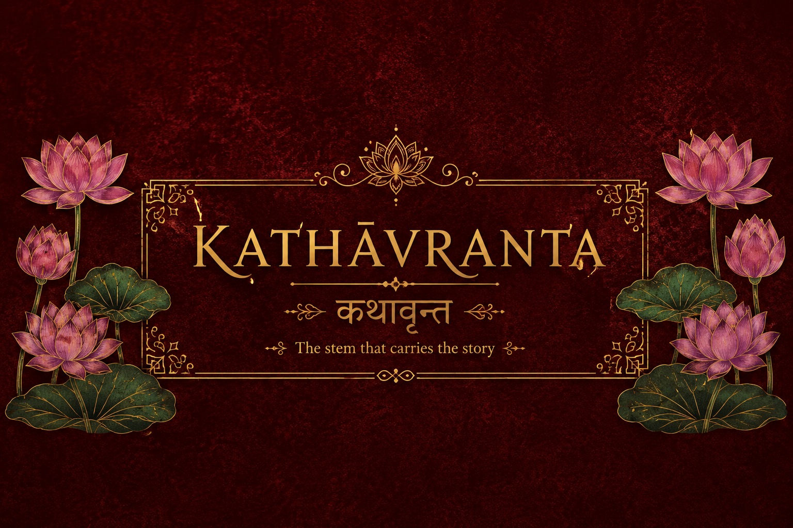
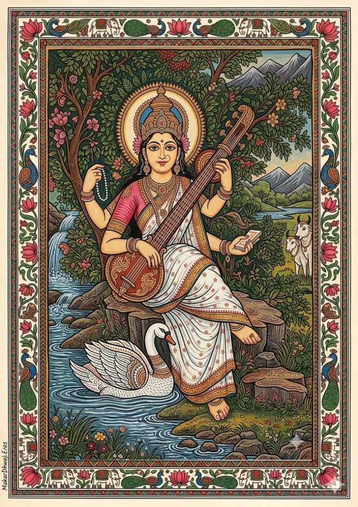
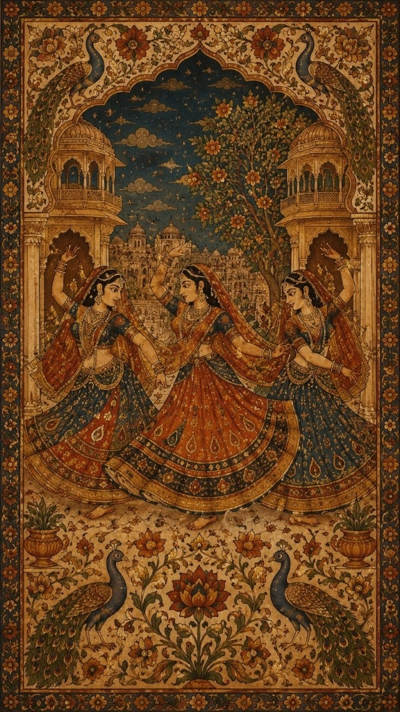
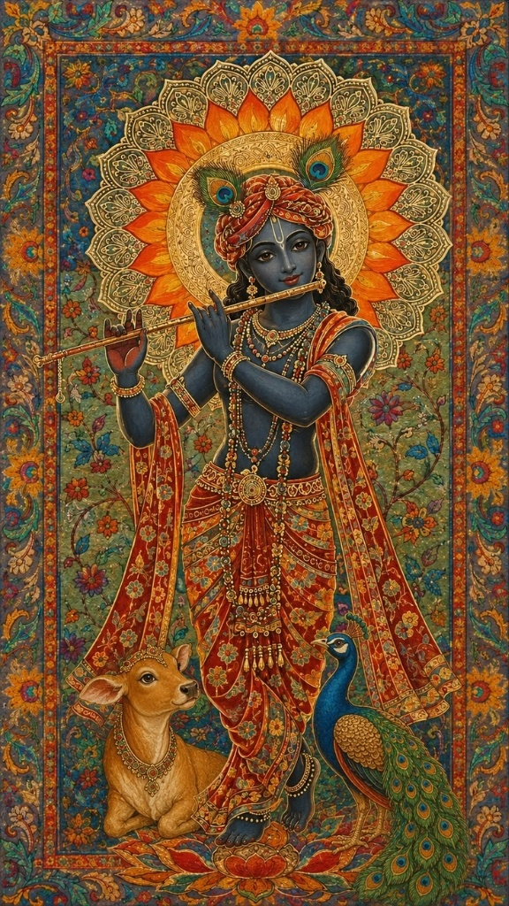

Veena & Alaap
Ancient strings, ragas and sacred chant lines

Sing or hum a tune into your microphone, type lyrics or title, or explore traditional folk heritage across Indian states.

Ancient strings, ragas and sacred chant lines

Rajasthani Maand, Bengali Baul and desert calls

Flute melodies, group cycles and folk devotion
Matches titles, lyric lines, humming melody semitones, state heritage, instruments, and cultural era.
Choose a regional tradition, work through video lessons level by level, then record yourself and get instant practice feedback.
Upload a photo or use your camera. A real vision AI model looks at it and tells you which Indian art form or craft it is.
Drag a photo here, or choose an option below
An authentic social hub for Indian oral heritage, folk traditions, ballads, and musical lore. Share, teach, and preserve traditions.
Register your real contributor identity to share oral lore, ballads, and lessons with the community.
Share authentic oral lore, folk lyrics, instrument recordings, or step-by-step cultural tutorials.
Search and explore authentic Dohas, Folktales & Stories, Khyal Folk-Theatre, Poetry & Shayari, and Heritage Books across states, authors, and festivals.
Discover classical and folk songs, legendary authors & saints, regional folktales, nataks, traditional dance forms, and instruments.